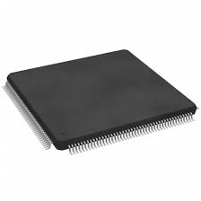
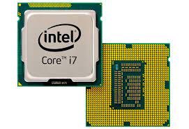

Click on each department to view more details
In a world not so distant, people relied solely on manual processes to carry out their tasks and activities. In offices, clerks meticulously recorded information by hand, using ink and paper ledgers to keep track of records. Communication was slow, relying on handwritten letters sent through postal services, often taking days or even weeks to reach their destination.
In the field of mathematics, complex calculations were performed manually using abacuses, slide rules, and other mechanical devices. Scientists and engineers spent hours crunching numbers and solving equations by hand, a process prone to errors and requiring immense patience and precision.
Similarly, in manufacturing and production, workers labored tirelessly on assembly lines, crafting products piece by piece. Every step of the production process, from assembly to quality control, was done manually, leading to inefficiencies and long lead times.
But then, a revolutionary invention changed everything—the computer. With the advent of computers, tasks that once took days or weeks to complete could now be done in a fraction of the time. Data could be stored, processed, and analyzed with unprecedented speed and accuracy. Communication became instantaneous, with emails replacing handwritten letters and spreadsheets replacing paper ledgers.
In offices, computers transformed the way information was managed and processed. Tasks that were once tedious and time-consuming, such as data entry and record-keeping, were now automated, freeing up time for more strategic and creative work.
In manufacturing, computers revolutionized production processes, leading to increased efficiency, higher quality products, and reduced costs. Automation technologies such as robotics and computer-aided design (CAD) allowed for greater precision and flexibility in manufacturing processes.
Computer Science
Computer science is the study of computers and computational systems. It involves understanding the theory, design, development, and application of computer systems and software.
Computer
A computer is an electronic device capable of performing arithmetic and logical operations at high speed, typically under the control of instructions stored in its memory. It consists of hardware components such as the central processing unit (CPU), memory, storage devices, input/output devices, and networking components. Computers process data according to predefined algorithms to produce desired outputs. They come in various forms, including personal computers, laptops, servers, mainframes, and embedded systems.
Data
Data refers to raw facts, symbols, or values that represent the basic elements of information. It can take various forms, including numbers, text, images, audio, and video. Data by itself has little meaning or context until it is processed and organized. Data can be structured, such as in databases with defined formats and relationships, or unstructured, such as free-form text or multimedia files. In computing, data is manipulated, analyzed, and transformed to derive meaningful insights or to perform specific tasks.
Information
Information is the processed and organized form of data that conveys meaning and context. It results from the interpretation, analysis, and presentation of data within a specific context or framework. Unlike data, which lacks context and relevance on its own, information provides valuable insights, knowledge, or instructions that aid decision-making, communication, and problem-solving. Information can be structured into meaningful patterns, summaries, reports, or visualizations to facilitate understanding and action by individuals or systems. It is essential for making informed decisions, gaining knowledge, and achieving various objectives in different domains.
Examples of computers
- Notebooks
- Desktops
- Laptops
- Tablets
Speed
Computers can execute instructions and process data at incredibly high speeds, measured in terms of millions or even billions of operations per second (megahertz or gigahertz).
Accuracy
Computers perform operations with a high degree of accuracy, minimizing errors in calculations and data processing.
Storage
Computers can store vast amounts of data in various forms, ranging from text and numbers to multimedia files, in both volatile (temporary) and non-volatile (permanent) storage devices.
Versatility
Computers can be programmed to perform a wide range of tasks and functions, from simple arithmetic calculations to complex simulations, data analysis, and multimedia processing.
Automation
Computers can automate repetitive tasks and processes, allowing for increased efficiency and productivity in various domains, including manufacturing, finance, healthcare, and entertainment.
Business and Finance
Computers are essential for accounting, financial analysis, payroll processing, and inventory management.
They facilitate online banking, electronic transactions, and financial modeling for investment decisions.
Education
Computers are used for research, accessing educational resources, and online learning platforms.
They enable interactive learning experiences through educational software, simulations, and multimedia presentations.
Healthcare
Computers support patient record management, medical imaging, and diagnostic tools for healthcare professionals.
They aid in medical research, drug discovery, and treatment planning through data analysis and simulation.
Communication
Computers enable email communication, instant messaging, and video conferencing for personal and business purposes.
They power social media platforms, online forums, and collaborative tools for networking and information sharing.
Entertainment
Computers are used in gaming consoles, PC gaming, and mobile gaming platforms for entertainment purposes.
They support streaming services, digital media creation, and virtual reality experiences for movies, music, and interactive content.
Manufacturing and Industry
Computers control industrial processes, robotics, and automation systems for manufacturing and production.
They assist in product design, prototyping, and quality control through computer-aided design (CAD) and computer-aided manufacturing (CAM) software.
Science and Research
Computers facilitate data analysis, modeling, and simulation in various scientific disciplines, including physics, chemistry, and biology.
They aid in weather forecasting, space exploration, and genomic research through high-performance computing and specialized software tools.
Government and Public Services
Computers support administrative functions, data management, and citizen services in government agencies and public institutions.
They enable electronic voting, digital governance, and law enforcement activities for maintaining public order and security.
Transportation and Logistics
Computers manage transportation systems, route optimization, and traffic control for airlines, railways, and shipping companies.
They track shipments, manage supply chains, and coordinate logistics operations for efficient movement of goods and services.

Input
The processing cycle begins with the input of data and instructions into the computer system. Input devices such as keyboards, mice, scanners, and microphones are used to enter data or commands.
Processing
Once data and instructions are inputted, the central processing unit (CPU) executes the instructions. The CPU performs arithmetic and logical operations on the data according to the instructions provided.
Storage
During processing, data and intermediate results may be temporarily stored in the computer's memory. Memory, including RAM (Random Access Memory), provides fast access to data and instructions needed by the CPU.
Output
After processing, the final results are produced as output for the user. Output devices such as monitors, printers, speakers, and storage devices present or store the processed information.
Advantages
Speed and Efficiency
Computers can process large volumes of data at incredibly high speeds, significantly faster than manual methods. Tasks that would take hours or days to complete manually can be done in a fraction of the time with computers, boosting productivity and efficiency.
Accuracy and Precision
Computers perform data processing with a high level of accuracy, minimizing errors and inconsistencies that may occur in manual processing. Automated algorithms and validation checks ensure precise calculations and reliable results, improving the quality of data processing outcomes.
Scalability
Computer systems can easily scale to handle growing volumes of data without significant manual effort. As data processing requirements increase, additional hardware resources can be added or upgraded to accommodate the demand, ensuring scalability and flexibility.
Storage and Retrieval
Computers provide efficient storage and retrieval of data, allowing for easy access to large datasets and historical records. Data can be organized, indexed, and archived in digital formats, making it readily available for analysis, reporting, and decision-making purposes.
Automation and Batch Processing
Computers automate repetitive data processing tasks through batch processing techniques, reducing manual intervention and human error. Batch processing allows for the scheduling and execution of data processing jobs at convenient times, optimizing resource utilization and workflow efficiency.
Disadvantages
Initial Cost and Maintenance
The initial investment in computer hardware, software, and infrastructure can be substantial, especially for organizations with limited budgets. Ongoing maintenance costs, including software updates, hardware upgrades, and technical support, can also add to the total cost of ownership.
Security Risks
Computers are vulnerable to various security threats, including malware, viruses, hacking, and data breaches. Data processed on computers may be at risk of unauthorized access, manipulation, or theft, posing a significant security concern for organizations and individuals.
Dependence on Electricity and Infrastructure
Computers rely on continuous electricity supply and functioning infrastructure, including power grids, internet connectivity, and network infrastructure. Disruptions or outages in power supply or infrastructure can disrupt data processing operations and result in downtime, affecting productivity and service delivery.
Environmental Impact
The production, operation, and disposal of computer hardware contribute to environmental pollution and resource depletion. Energy consumption, electronic waste generation, and carbon emissions associated with computer usage pose environmental challenges that need to be addressed through sustainable practices and policies.
Data Privacy Concerns
Storing and processing data on computers raise privacy concerns regarding the collection, storage, and use of personal or sensitive information. Compliance with data protection regulations and safeguarding against unauthorized access or misuse of data is essential but can be challenging to enforce effectively.
The Abacus

The Abacus is one of the earliest known counting devices, dating back thousands of years to ancient civilizations such as the Mesopotamians, Egyptians, and Chinese. It consists of a frame with rods or wires along which beads or stones are slid to represent numerical values. The Abacus enables users to perform basic arithmetic operations, such as addition, subtraction, multiplication, and division, through manual manipulation of the beads. Although it predates mechanical and electronic computing devices, the Abacus remains in use today, particularly in education and regions where traditional methods are preferred.

The Difference Engine
The Difference Engine was conceived by Charles Babbage in the early 19th century as a mechanical device to compute polynomial functions. It was designed to automatically compute and print mathematical tables, such as logarithms and trigonometric functions, with high accuracy. The Difference Engine operated by mechanical means, using gear wheels and levers to perform arithmetic calculations, eliminating the need for manual computation. Despite Babbage's designs, the actual construction of the full-scale version of the Difference Engine was not completed during his lifetime.

The analytical Engine
The Analytical Engine was also conceptualized by Charles Babbage and is considered the precursor to modern computers. Unlike the Difference Engine, the Analytical Engine was designed to be programmable and capable of performing general-purpose computations. It featured an arithmetic logic unit (ALU), memory storage, and control flow mechanisms, resembling the basic architecture of modern computers. The Analytical Engine utilized punched cards for input and output, allowing for the execution of complex algorithms and the storage of data.
First Generation

The first generation of computers emerged in the 1940s with the development of vacuum tube-based machines.
These computers were large, expensive, and consumed a considerable amount of electrical power.
They were characterized by slow processing speeds and limited memory capacity.
Examples include the ENIAC (Electronic Numerical Integrator and Computer) and UNIVAC I.
Second Generation (1950s-1960s)

The second generation of computers saw the adoption of transistors as the primary electronic component.
Transistors replaced vacuum tubes, leading to smaller, more reliable, and energy-efficient computers.
Second-generation computers were faster, more powerful, and less expensive than their predecessors.
Examples include the IBM 1401 and the DEC PDP-8.
Third Generation (1960s-1970s)

The third generation of computers witnessed the development of integrated circuits (ICs) or microchips.
ICs combined multiple transistors and other electronic components on a single silicon chip, significantly increasing computing power and efficiency.
Third-generation computers featured improved performance, smaller form factors, and expanded memory capacity.
Examples include the IBM System/360 and the DEC VAX series.
Fourth Generation (1970s-Present)
The fourth generation of computers is characterized by the use of Very Large Scale Integrated Circuits, which integrate the entire central processing unit (CPU) on a single chip.
VLSICs enabled the development of personal computers (PCs), laptops, and other compact computing devices.
Fourth-generation computers are more affordable, versatile, and user-friendly, with widespread adoption in homes, businesses, and industries.
Examples include the Apple Macintosh, IBM PC, and various models of desktop and laptop computers.
Fifth Generation
The fifth generation of computers is characterized by advancements in artificial intelligence (AI),machine learning, and parallel processing.
These computers aim to emulate human-like intelligence and reasoning capabilities through advanced algorithms and neural networks.
Fifth-generation technologies include quantum computing, which leverages the principles of quantum mechanics to perform complex calculations at unprecedented speeds.
While still in the experimental stage, fifth-generation computers hold the potential to revolutionize various fields, including scientific research, healthcare, and finance.
According to physical size and capablity
Supercomputers
Designed for high-performance computing tasks requiring immense processing power, such as weather forecasting, scientific simulations, and cryptography.
Mainframe computers
Used in large organizations for critical business applications, transaction processing, and database management.
Mini Computers
Mid-sized computers suitable for small to medium-sized businesses, departmental use, and scientific research.
Microcomputers
Also known as personal computers (PCs), these are small, affordable computers designed for individual use, such as desktops, laptops, tablets, and smartphones.
According to Purpose
General Purpose Computers
Designed to perform a wide range of tasks and applications, from word processing and web browsing to gaming and multimedia.
Special Purpose Computers
Built for specific tasks or functions, such as embedded systems in appliances, industrial control systems, and gaming consoles.
According to Functionality
Analogue computers
Analogue computers represent and process data in continuous form, using physical quantities such as voltage, current, or rotation. They are well-suited for tasks involving physical phenomena, such as simulations of electrical circuits, fluid dynamics, and mechanical systems. Analogue computers provide real-time results and are often used in scientific research, engineering design, and control systems.
Digital Computers
Digital computers represent and process data in discrete, binary form, using combinations of 0s and 1s to represent information. They are versatile and widely used for general-purpose computing tasks, including arithmetic calculations, data processing, and information storage. Digital computers operate using electronic components such as transistors, microchips, and memory modules, executing instructions sequentially or in parallel.
Hybrid Computers
Hybrid computers combine the features of both analogue and digital computers, leveraging their respective strengths for specific applications. They typically consist of analogue-to-digital converters (ADCs) and digital-to-analogue converters (DACs) to interface between analogue and digital components. Hybrid computers are used in tasks requiring real-time data acquisition and processing, such as scientific experiments, medical diagnostics, and control systems in manufacturing and automation.
Summary Table: Classification of Computers
| Classification Criteria | Categories |
|---|---|
| According to Physical Size and Capability | Supercomputers Mainframe Computers Minicomputers Microcomputers |
| According to Purpose | General-Purpose Computers Special-Purpose Computers |
According to Functionality | Analogue Computer Digital Computers Hybrid Computers |
A computer user environment refers to the physical and virtual surroundings in which individuals interact with computer systems and technology. It encompasses various factors, including the layout of physical spaces, equipment configurations, software applications, network infrastructure, and user interfaces. The goal of a computer user environment is to create an optimal setting that supports efficient and effective use of computer resources while promoting user comfort, productivity, and satisfaction.
This environment may vary depending on factors such as the type of organization, the nature of tasks performed, and the preferences and requirements of users. Ultimately, a well-designed computer user environment facilitates seamless interaction between humans and technology, enabling individuals to accomplish their goals and tasks with ease.
Factors to consider when setting up a computer user environment
Burglar Proofing
Install security measures such as alarms, surveillance cameras, and secure locks to protect computer equipment from theft or unauthorized access. Consider physical barriers such as security grilles or shutters on windows and doors to deter burglars.
Layout of Space and Floor
Design an ergonomic layout that optimizes space utilization and promotes efficient workflow. Arrange furniture, equipment, and workstations in a way that minimizes clutter, maximizes accessibility, and supports collaboration.
Temperature and Humidity Contro
Maintain a controlled environment with stable temperature and humidity levels to prevent damage to computer hardware and sensitive electronic components. Use air conditioning, ventilation systems, and humidity control devices to regulate the climate within the computer user environment.
Number of Users
Determine the number of users who will be accessing the computer environment to ensure adequate resources, licenses, and support are available. Plan for scalability to accommodate potential growth in the number of users over time.
Stable and Reliable Power Supply
Implement backup power solutions such as uninterruptible power supplies (UPS) or generators to prevent data loss and system downtime during power outages. Ensure that electrical wiring and outlets are properly configured and maintained to provide a stable and reliable power supply to computer equipment.
Dust Control Measures
Implement dust control measures such as air filters, dust covers, and regular cleaning to minimize the accumulation of dust and debris on computer equipment. Use dust-resistant enclosures or cabinets to protect sensitive components from dust-related damage.
Good Lighting
Provide adequate lighting in the computer user environment to reduce eye strain, enhance visibility, and promote a comfortable and productive working environment. Use natural light where possible and supplement with artificial lighting sources such as overhead lights, task lamps, or LED fixtures.
Cable Management
Organize cables and wires neatly to prevent tripping hazards and reduce the risk of accidental damage or disconnection. Use cable trays, ties, and labels to keep cables organized and easily identifiable.
Fire Safety
Install smoke detectors, fire extinguishers, and emergency exit routes to mitigate the risk of fire-related incidents. Conduct regular inspections and fire drills to ensure preparedness and compliance with safety protocols.
Backup and Disaster Recovery
Implement regular data backups and disaster recovery plans to protect against data loss and minimize downtime in the event of hardware failure, natural disasters, or cyberattacks.
Electrical Safety
Ensure that electrical outlets and wiring are in good condition to prevent electric shocks or fire hazards. Use surge protectors and uninterruptible power supplies (UPS) to safeguard against power surges and outages.
Parts of a computer and their funtions
Peripheral Devices
These devices are connected to the system unit of a computer e.g Mouse, Monitor,Keyboard
A port is the part where peripheral devices are attached to the system unit.
Other devices that are attatched to the system unit include; external speakers, routers, gamepads, flash disks, projectors, printers, web cameras and even headsets
| Computer part | Function |
|---|---|
| Monitor | Displays visual output from the computer, including text, graphics, and videos. Allows users to interact with and interpret the information generated by the computer. |
| Keyboard | Provides a means for inputting alphanumeric characters, symbols, and commands into the computer. Facilitates text entry, command execution, and data input. |
Mouse | Enables the user to interact with graphical user interfaces (GUIs) by moving a pointer on the screen and clicking buttons. Enhances navigation and selection within software applications and the operating system. |
Categoie of computer keyboard keys

Function Keys (F1-F12)
Perform specific tasks depending on the software being used.
Alphanumeric Keys
Used for typing letters, numbers, and special characters.
Letters: A, B, C, ..., Z
Numbers: 0, 1, 2, ..., 9
Special Characters: !, @, #, $, %, &, *, (, ), etc.
Navigation Keys
Allow users to navigate within documents, web pages, or menus.
Examples:
Arrow Keys: Up, Down, Left, Right
Home: Moves the cursor to the beginning of a line or document.
End: Moves the cursor to the end of a line or document.
Page Up: Scrolls up one page at a time.
Page Down: Scrolls down one page at a time.
Special Purpose Keys
Perform specific actions related to system control or user interaction.
Examples
Escape (Esc): Used to cancel an operation or close a dialog box.
Print Screen (PrtSc): Captures a screenshot of the entire screen.
Pause/Break: Pauses the execution of a program or displays system information.
Numeric Keys
Provide a dedicated numeric input for calculations or data entry.
Examples:
Numbers (0-9) and arithmetic operators (+, -, *, /) on the numeric keypad.
Enter key on the numeric keypad for confirming commands or inputs.
Editing Keys
Used for editing text and interacting with documents.
Examples:
Backspace: Deletes the character to the left of the cursor.
Delete: Removes characters or objects.
Insert: Toggles between insert and overwrite modes.
Enter: Confirms commands or moves the cursor to the next line.
Toggle Keys
Toggle the state of certain functions on or off.
Examples:
Caps Lock: Capitalizes all letters until turned off.
Num Lock: Enables or disables the numeric keypad for numeric input.
Scroll Lock: Controls scrolling behavior in some applications.
Pointing Devices
A pointing device is a hardware component or peripheral input device used to interact with graphical user interfaces (GUIs) by controlling the movement of an on-screen cursor or pointer. Pointing devices are essential for navigating through digital content, selecting options, and performing various actions within software applications.
Mouse

A common pointing device that typically consists of a handheld device with one or more buttons and a sensor (optical, laser, or mechanical) that tracks movement across a flat surface. Users move the mouse to control the cursor on the screen, and clicking the buttons allows for selection and interaction.
Joystick

Primarily used in gaming and flight simulation, a joystick is a handheld input device with a vertical stick that can be tilted or moved in various directions to control the movement of objects or characters on the screen.
Stylus

A pen-like device used for precise input on touchscreen devices or graphics tablets. Styluses provide greater accuracy and control, making them ideal for drawing, handwriting recognition, and other creative tasks.
Trackball

Similar to a mouse but with a stationary ball on top that users rotate with their fingers or thumb to control the cursor's movement. Trackballs offer ergonomic benefits and are often used in specialized applications or gaming setups.
Parts of computer mouse

Left Button
Typically located on the left side of the mouse, the primary button is the most frequently used button. It is used for selecting, clicking, dragging, and interacting with objects on the screen.
Right Button
Usually positioned on the right side of the mouse, the secondary button serves various functions depending on the context. It commonly opens context menus, performs secondary actions, and provides right-click functionality in most operating systems.
Scroll Wheel
The scroll wheel is a small wheel located between the primary and secondary buttons. It allows users to scroll vertically through documents, web pages, or other content displayed on the screen. Pressing the scroll wheel down often acts as a third button, triggering additional functions such as opening links in new tabs or closing windows.